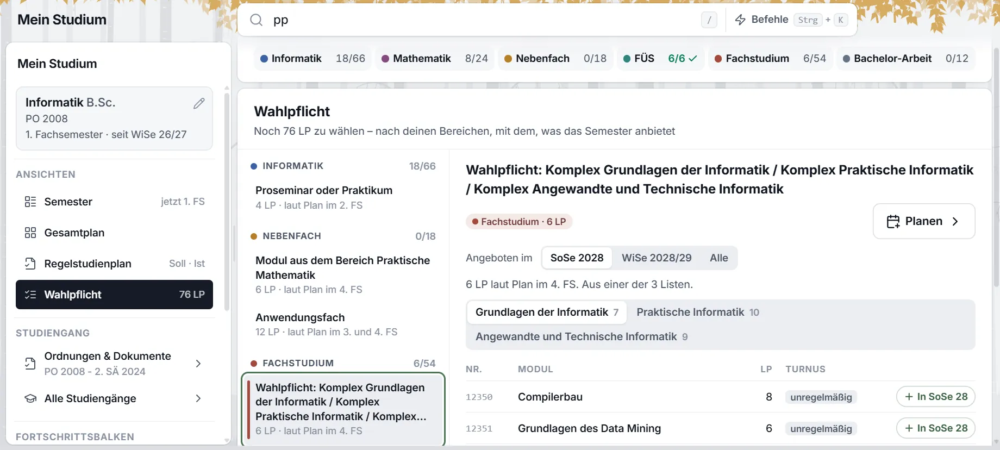
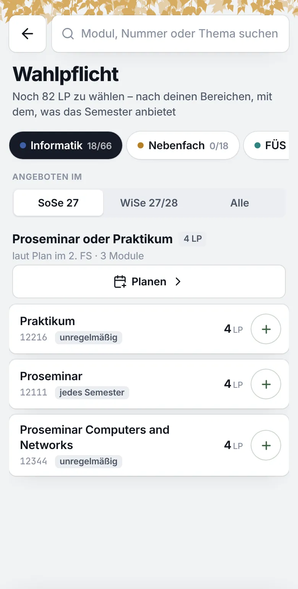

Folia · Mein Studium · Wahlpflicht · zweite Runde mit Nachtrag, 4. November 2026 · gebaut in Folia 1.74.0
Die Wahlpflicht, aufgeräumt
Aus der ersten Runde hast du A gewählt, mit drei Änderungen. Die Ansicht ist jetzt zum Nachschlagen da: wie viel du aus einer Wahl brauchst und welche Module es dafür gibt. Kein Semester, kein Knopf zum Einplanen: Ein Klick auf ein Modul öffnet seine Seitenleiste, und dort plant man wie überall sonst. Eine fertige Wahl sieht aus wie jede andere, nur mit vollem Balken. Dazu der Nachtrag zu den Komplexen: Jeder hat höchstens 24 LP, nur einer darf bis 30. Die erste Runde steht weiter unten.
„Ich finde option a an sich gut. … 1. Es braucht keine semester angabe. Hier ist wirklich einfach nur der lookup, wie viel brauche ich aus dem bereich und was gibt es da. 2. Es braucht keinen einplanen button. Es reicht hier, wenn man die modulsidebar aufmachen kann. Da kann man ja schon vernüftig in das semester einplanen 3. Was zur hölle ist die anzeige vollständig. … Mach das mal so, dass das design gleich bleibt. Mach doch einfach die progress bar voll.“ — du, zur ersten Runde
„Ja an sich passt das jetzt so. Aber eine sache musst du noch bedenken und zwar, wenn wir so ein mix konzept haben aus verschiedenen bereichen, dann kann man sich die punkte nur bei einem der bereiche anrechnen. Das muss noch irgendwie kommuniziert werden.“ … „Was ich wollte war, dass man bei den bereichen grundlagen der informatik, praktische informatik und technische informatik eigentlich nur 24 lp gemacht werden können, nur eins davon darf 30 haben.“ — du, zur zweiten Runde
Was die zweite Runde ändert
Kein Semester. Die Pfeile, „Im SoSe 28 angeboten“ und „laut Plan im 4. FS“ sind weg. Die Module einer Liste stehen in einer Reihe: deine zuerst, dann die gemerkten, dann alle nach dem Alphabet.
Kein Knopf zum Einplanen. Ein Klick auf eine Zeile öffnet die Seitenleiste des Moduls, am Handy als Blatt von unten. Dort stehen „Einplanen“ mit seinem Semester und „Merken“, wie heute.
Fertig sieht aus wie offen. Kein „✓ vollständig“, kein Grün, nichts rutscht nach unten. Der Balken ist voll, daneben steht „4 / 4 LP“. Die Bereiche bleiben in der Reihenfolge des Plans.
Deine Module tragen ihre Zeichen, wie in der Legende der Seitenleiste von „Mein Studium“: Kreis geplant, halb voll läuft, Haken bestanden.
Die Komplexe als ein Eintrag: 50 LP aus den drei, aus jedem mindestens 10. Die „Wahlpflicht im 4. FS“ steht nicht mehr eigens da, ihre 6 LP stecken in dem Komplex, für den sie zählen.
Nachtrag: je 24, einer bis 30. Die 6 LP der Wahlpflicht im 4. FS zählen nur bei einem Komplex. Jeder Balken geht bis 30, die Stelle über 24 ist schraffiert, bis einer der drei sie braucht; dann endet der Balken der anderen bei 24.
Zweite Runde
AZum Nachschlagen
Links die Wahlen nach Bereichen, jede mit ihrem Balken und wie viele Module es für sie gibt. Rechts die gewählte: was sie verlangt, ihre Listen als Reiter, darunter die Module. Ein Klick auf ein Modul öffnet seine Seitenleiste, wie überall in Betula, und dort wird eingeplant.
Klick ein Modul: Die Seitenleiste geht auf. „Einplanen“ plant in das Semester, das sie vorschlägt, ▾ in ein anderes. Bei den Komplexen hat Praktische Informatik im Beispiel 24 LP: Plane dort ein weiteres Modul ein, dann füllt sein Balken die schraffierte Stelle, und bei den beiden anderen endet er bei 24. Plane bei Proseminar oder Praktikum ein zweites Modul ein: Der volle Balken wird schraffiert, mehr als nötig ist erlaubt. „Schließen“ oder Esc schließt die Seitenleiste.
Was man sieht
Links jede Wahl mit Namen, „0 / 6 LP“, Balken und „17 Module“. Am Bereich die Summe seiner Wahlen, „6 / 18 LP“.
Fertige Wahlen (Proseminar oder Praktikum, das FÜS) sehen aus wie offene. Nur ihr Balken ist voll.
Die Komplexe sind ein Eintrag mit 50 LP, darunter die drei, jeder mit einem Strich bei 10 und der schraffierten Stelle von 24 bis 30, die nur einem gehört.
Rechts der Name, der Stand, ein Satz, was die Wahl verlangt, die Listen als Reiter und die Module: Zeichen, Name, Nummer, LP. Zählt ein Modul schon für eine andere Wahl, steht das klein daneben.
Wie es sich verhält
Ein Klick auf eine Wahl oder einen Komplex wählt, was rechts steht.
Ein Klick auf ein Modul öffnet seine Seitenleiste über der rechten Spalte. Die Zeile bleibt markiert, solange sie offen ist; ein anderes Modul wechselt sie.
„Einplanen“ plant für die Wahl, aus der die Seitenleiste geöffnet wurde. Liegt im Semester ein offener Platz der Wahl, füllt das Modul ihn, wie heute „+ In“.
Am Handy führt die Liste der Wahlen zur Seite der Wahl, das Modul öffnet sich als Blatt von unten.
Worauf zu achten ist
Wann ein Modul angeboten wird, steht nur noch in der Seitenleiste.
Wer mehrere Module vergleichen will, öffnet die Seitenleiste nacheinander.
Die Seitenleiste deckt die rechte Spalte zum Teil zu, die linke bleibt frei.
Zweite Runde · Nachtrag
Die Komplexe: je 24, einer bis 30
Die Wahlpflicht im 4. FS ist eine Mischung aus den drei Komplexen: ein Modul aus Grundlagen, Praktischer oder Angewandter und Technischer Informatik. Ihre 6 LP zählen nur bei einem der drei. Deshalb hat jeder Komplex höchstens 24 LP, und nur einer darf bis 30. Genau so steht es in der Tabelle der Ordnung, und so zeigt es A jetzt.
„Was ich wollte war, dass man bei den bereichen grundlagen der informatik, praktische informatik und technische informatik eigentlich nur 24 lp gemacht werden können, nur eins davon darf 30 haben.“ — du, zum Nachtrag
Regelstudienplan (Anlage 2)
4. FS
5. und 6. FS
Summe
Komplex Grundlagen der Informatik
10–24
10–30
Komplex Praktische Informatik
6
10–24
10–30
Komplex Angewandte und Technische Informatik
10–24
10–30
Summe Komplexe des Fachstudiums
6
44
50
Dazu § 6 Abs. 8 der Prüfungs- und Studienordnung (Lesefassung im Amtlichen Mitteilungsblatt 12/2024): „In den drei Komplexen müssen insgesamt 50 LP durch Prüfungen erworben werden. Um eine gewisse Breite des Studiums zu garantieren, müssen in jedem Komplex jeweils mindestens 10 LP erworben werden.“ Die 6 in der Spalte des 4. FS stehen in der Zeile der Praktischen Informatik, gemeint ist einer der drei; im Plan, den Betula liest, heißt die Zeile „Wahlpflicht: Komplex … / … / …“.
Der Balken jedes Komplexes geht bis 30, mit dem Strich bei 10. Bis 24 ist er wie jeder andere. Die Stelle von 24 bis 30 ist schraffiert: Sie steht jedem der drei offen, aber nur einem.
Geht ein Komplex über 24, gehört ihm die Stelle: Sein Balken füllt sie, daneben steht „26 / 10–30 LP“. Bei den beiden anderen ist sie weg, ihr Balken endet bei 24, daneben „10–24 LP“.
Gehen zwei über 24, sagt es ein Hinweis über den Komplexen: „Grundlagen der Informatik und Praktische Informatik haben beide mehr als 24 LP. Nur einer darf bis 30.“ Beim zweiten ist, was über 24 liegt, gelb; gesperrt wird nichts. Für „Noch … LP zu wählen“ zählt beim zweiten nur bis 24.
Ein Modul zählt für den Komplex, auf dessen Liste es steht. Welches Modul die 6 LP aus dem 4. FS sind, muss niemand wählen: Es ist der Komplex, der über 24 geht. Die Wahlpflicht im 4. FS steht in dieser Ansicht nicht mehr eigens; Regelstudienplan und Gesamtplan zeigen ihre Zeile weiter, so wie der Plan sie druckt.
Betula rechnet heute schon fast so: die 6 LP in einer eigenen Zeile, jeden Komplex bis 24. Nur nimmt die Zeile im 4. FS das erste Modul aus irgendeinem Komplex, auch wenn ein anderer später über 24 geht. Zum Bauen gehört, dass die 6 LP dem Komplex zufallen, der sie braucht.
Zweite Runde
Fragen an dich
Jeweils mit meinem Vorschlag. Ein „passt“ reicht, wo du zustimmst.
Je 24, einer bis 30: Jeder Balken geht bis 30, die Stelle über 24 ist schraffiert, bis einer sie braucht; dann gehört sie ihm, und die anderen enden bei 24.Vorschlag: so.
Zwei über 24: ein Hinweis über den Komplexen, beim zweiten gelb, was über 24 liegt; nichts gesperrt.Vorschlag: so.
Wer die 6 LP bekommt: der Komplex, der über 24 geht, von selbst. Eine Wahl dafür in der Seitenleiste gibt es nicht.Vorschlag: so; wählen müsste man nur, wenn zwei über 24 gehen, und dann zählt der größere.
Wofür „Einplanen“ plant: für die Wahl, aus der die Seitenleiste geöffnet wurde, und es füllt einen offenen Platz von ihr im Semester. Ohne das bliebe ein Platzhalter neben dem Modul stehen.Vorschlag: ja.
Module in zwei Wahlen: 16 der 17 Module der Praktischen Mathematik stehen auch im Anwendungsfach. Mein erster Nachtrag dazu („Zählt für“) war ein Missverständnis und ist wieder raus.Vorschlag: nur „zählt für …“ an der Zeile, wie in der zweiten Runde.
Das Angebot in der Zeile: „jedes WiSe“, „unregelmäßig“ steht nur in der Seitenleiste.Vorschlag: so lassen.
Erste Runde, 4. November 2026
Drei Konzepte
Die Ansicht „Wahlpflicht“ zeigt, was dein Plan dir zu wählen lässt und aus welchen Modulen. Der Aufbau trägt, aber sie ist unruhig: ein Name über drei Zeilen, zwei Umschalter übereinander, ein grauer Kasten und ein umrandeter Knopf in jeder Zeile, und die Komplexe des Fachstudiums stehen doppelt da. Drei Konzepte mit derselben Aufgabe: zeigen, welche Module es für eine Wahl gibt und wie viele LP noch fehlen, mit einem Balken je Wahl. Du hast A gewählt; was die zweite Runde daran ändert, steht oben.
„Ich finde ihn grundsätzlich eigentlich not bad. Aber es ist einfach noch unaufgeräumt und wuselig. Auch solche sachen, wie kombinierte komplexe ergibt kaum sinn, weil die ja einzeln gelisted sind. … Der planen knopf kann raus. … Ja bitte erstelle einfach ein ordentliches konzept, dass die aufgabe macht zu zeigen, welche module in dem bereich verfügbar sind. Gerne noch die information, wie viele noch benötigt sind. Also mit progressbar pro section aber wie auch immer.“ — du
Was alle drei teilen
„Planen“ ist raus. Eingeplant wird mit dem Knopf am Modul. Die Werkbank bleibt über „Module hinzufügen“ im Semester erreichbar.
Ein Balken je Wahl: hell, was geplant ist, voll, was bestanden ist, daneben „6 / 12 LP“. Verlangt eine Wahl 10 bis 24 LP, markiert ein Strich die 10.
Kurze Namen: Zählt der Name einer Wahl nur ihre Listen auf, heißt sie nach dem, was sie ist: „Wahlpflicht im 4. FS“. „Modul aus dem Bereich“ fällt weg, wie im Gesamtplan.
Die Komplexe als eine Gruppe: Die Wahlpflicht im 4. FS und die drei Komplexe ziehen aus denselben drei Listen. Sie stehen zusammen, jede Liste einmal, jeder Komplex mit seinem Balken.
Sortiert statt versteckt: was das Semester anbietet, was nach Ankündigung kommt, was es nicht anbietet. Das Letzte steht zugeklappt darunter, sein Knopf plant in das nächste Semester, das es anbietet. „Alle“ fällt weg.
Das Semester mit Pfeilen: ‹ SoSe 2028 › wählt, wohin geplant wird, vom ersten Semester des Studiums an. Das laut Plan ist markiert; ein früheres geht, dann steht „früher als laut Plan“ daneben.
Ruhige Zeilen und Erledigtes unten: Name, Nummer, LP, Knopf. Was eine Gruppe gemeinsam hat, steht einmal in ihrem Kopf. Eine fertige Wahl rückt nach unten und braucht eine Zeile.
Erste Runde · Ausgangslage
Was heute ist
Dein Screenshot von heute, am Rechner auf der Wahl, um die es geht, und dieselbe Ansicht am Handy auf canary (Folia 1.70.2).

Am Rechner: die Wahl „Wahlpflicht: Komplex …“ im Fachstudium.
Der Name nimmt den Platz. „Wahlpflicht: Komplex Grundlagen der Informatik / Komplex Praktische Informatik / Komplex Angewandte und Technische Informatik“ zählt die drei Listen auf, die zwei Zeilen tiefer als Reiter noch einmal stehen. Links ist er nach drei Zeilen abgeschnitten.
Dieselben Listen doppelt. Unter dieser Wahl stehen die drei Komplexe noch einmal als eigene Wahlen, mit denselben Modulen. Dass sie zusammen 44 LP sind, steht nur in einem Satz.
Kein Stand je Wahl. Links stehen die Zahlen des ganzen Bereichs (Informatik 18/66, mit den Pflichtmodulen), nicht, was von einer Wahl noch fehlt.

Am Handy, mit demselben Studium.
Zwei Umschalter übereinander. „SoSe 2028 | WiSe 2028/29 | Alle“, darunter ein Satz, darunter die Listen, die in zwei Zeilen umbrechen. „Alle“ ist kein Semester, sondern das Ende eines Filters.
Jede Zeile gleich laut. Ein grauer Kasten „unregelmäßig“ und ein umrandetes „+ In SoSe 28“ in jeder Zeile. Was besonders ist, fällt so nicht auf.
Zwei Wege zum Einplanen. Groß oben rechts „Planen ›“ zur Werkbank, in jeder Zeile „+ In SoSe 28“. Am Handy ist „Planen“ der breiteste Knopf der Seite.
Erste Runde · Konzept A
AZwei Spalten
Der Aufbau von heute, nur ruhiger. Links stehen die Wahlen nach Bereichen, jede mit ihrem Balken, die Komplexe als eine Gruppe mit einer Zeile je Komplex. Rechts die gewählte Wahl: oben in zwei Zeilen, was sie verlangt, und das Semester, darunter die Listen als Reiter und die Module in Gruppen nach ihrem Angebot.
Klick links eine Wahl oder einen Komplex, rechts „+ SoSe 28“: Der Balken füllt sich. Mit ‹ › wechselst du das Semester. Bei den Komplexen zählt ein Modul bis zum SoSe 28 für die 6 LP im 4. FS, danach für seinen Komplex; das steht neben den Pfeilen.
Was man sieht
Links unter jeder Wahl ihr Balken, „0 / 6 LP“ und wann der Plan sie vorsieht. Am Bereich steht „noch 12 LP“ statt der Zahlen des ganzen Bereichs. Fertige Bereiche rutschen mit ✓ nach unten.
Die Komplexe sind ein Eintrag mit einem Balken für alle 50 LP. Darunter je eine Zeile für das 4. FS und jeden Komplex, jede mit ihrem kleinen Balken und dem Strich bei 10 LP.
Rechts ein Kopf in zwei Zeilen statt fünf: Name und Stand, der Balken, was der Plan verlangt, das Semester.
Die Module in Gruppen: „Bei dir“, „Im SoSe 28 angeboten“, „Unregelmäßig“ und zugeklappt „Nicht im SoSe 28 angeboten“. Ein leiser Knopf „+ SoSe 28“, die Nummer klein hinter dem Namen.
Wie es sich verhält
Ein Klick links wählt die Wahl. Ein Komplex wählt dazu seinen Reiter, „Im 4. FS“ dazu das SoSe 28.
‹ › geht vom ersten Semester des Studiums an. Weicht es vom Plan ab, steht das daneben, gesperrt ist nichts.
„+“ plant ein und füllt einen offenen Platz der Wahl im Semester, wie heute.
Am Handy führt die Liste zur Seite der Wahl, „‹ Wahlpflicht“ zurück.
Worauf zu achten ist
Man sieht die Module von einer Wahl auf einmal. Wer zwei vergleichen will, klickt hin und her.
Mit den Balken wird die linke Spalte länger als heute.
Die Gruppe „Komplexe“ ist neu: In folia_plans::choices braucht sie eine Ebene über den Wahlen.
Erste Runde · Konzept B
BEine Seite
Alles Offene untereinander, ohne etwas zu wählen: jeder Bereich ein Abschnitt, jede Wahl mit ihrem Balken und ihren Modulen als Kacheln, die im Semester angebotenen zuerst. Die drei Komplexe stehen in drei Spalten nebeneinander. Am Handy ist es dieselbe Seite in einer Spalte, so wie heute schon.
Plane eine Kachel mit „+“ ein, „Alle 17 zeigen“ klappt eine Wahl auf. Jede Wahl hat ihre eigenen Pfeile für das Semester.
Was man sieht
Jede offene Wahl auf einen Blick, mit Balken und bis zu sechs Modulen. Wie viel im ganzen Bereich fehlt, steht an seinem Kopf.
Die Komplexe nebeneinander, jeder mit seinem Balken über 10 bis 24 LP. Über ihnen die beiden Teile: 6 LP im 4. FS und zusammen 44 LP im 5. und 6. FS.
Eine Kachel sagt Nummer, LP und Angebot. Was das gewählte Semester sicher anbietet, trägt einen grünen Punkt.
Wie es sich verhält
Jede Wahl hat ihre eigenen ‹ ›. „+“ plant in dieses Semester. Was es nicht anbietet, steht zugeklappt darunter.
Bei mehreren Listen (Anwendungsfach) wählen Chips über den Kacheln die Liste.
Am Handy wird aus den drei Spalten ein Umschalter der Komplexe über ihren Modulen.
Worauf zu achten ist
Die Seite ist lang, am Handy sehr lang.
Viele Knöpfe auf einmal: Das Wuselige kommt zurück, wenn ein Studiengang zehn offene Wahlen hat.
In der Kachel steht nur „+“. Das Semester steht über der Wahl, nicht am Modul.
Erste Runde · Konzept C
CKacheln oben
Oben eine Kachel je Wahl, mit Balken, nach Bereichen: ein Brett, das zeigt, wie weit du bist. Darunter die gewählte in voller Breite, ihre Module in drei Spalten nach dem Angebot: was das Semester anbietet, was nach Ankündigung kommt, was es nicht anbietet.
Klick eine Kachel, dann „+ SoSe 28“ in einer Spalte. Mit ‹ › wandern die Module zwischen den Spalten, Physik ist im SoSe 28 zwei, null und zwei.
Was man sieht
Wie weit jede Wahl ist, in einer Reihe oben, ohne zu scrollen.
Die ganze Breite für die Module: drei Spalten statt einer Tabelle.
Was das Semester nicht anbietet, steht in der dritten Spalte, mit dem Semester, in das sein Knopf plant.
Wie es sich verhält
Eine Kachel wählt, was darunter steht. Die Kacheln selbst bleiben stehen.
Bei den Komplexen tragen die Reiter ihren Balken.
Am Handy laufen die Kacheln seitwärts, die drei Spalten stehen untereinander.
Worauf zu achten ist
Mit vielen Wahlen werden die Kacheln zwei oder drei Reihen hoch.
Spalten mit ungleich vielen Modulen sehen leer aus.
Am weitesten weg von heute, am Handy sieht man die Kacheln nicht alle.
Erste Runde · in allen drei
Die Namen
Die Pläne der BTU nennen eine Wahl oft so, wie sie in der Tabelle der Ordnung steht, und das ist nicht immer ein Name. Im Katalog stehen 196 Zeilen ohne Modul mit „/“ oder „oder“ im Namen, in vielen Studiengängen. Die Regel, nach der Betula sie kürzt (in der zweiten Runde geht die „Wahlpflicht im 4. FS“ ganz in den Komplexen auf):
„Modul aus dem Bereich …“ und „Modul aus dem Komplex …“ verlieren den Anfang, wie die Zeilen im Gesamtplan.
Zählt der Name nur die Listen der Wahl auf, bleibt, was ohne sie übrig ist („Wahlpflicht“, „Module aus dem gewählten Schwerpunkt“). Bleibt nichts, das Wort, das die Listen teilen („Schwerpunkt“). Dazu kommt das Fachsemester. Die Listen stehen dann einmal, als Reiter.
In einer Gruppe fällt das Wort der Gruppe weg: In „Komplexe“ heißt „Komplex Grundlagen der Informatik“ nur „Grundlagen der Informatik“.
Sonst bleibt der Name, auch mit „oder“: „Proseminar oder Praktikum“ ist eine Liste, und der Name sagt, was sie ist.
Im Plan
In Betula
Warum
Wahlpflicht: Komplex Grundlagen der Informatik / Komplex Praktische Informatik / Komplex Angewandte und Technische InformatikInformatik B.Sc., 4. FS
Wahlpflicht im 4. FSin der Gruppe „Komplexe“
Der Name zählt die drei Listen auf (2). Sie sind dieselben wie die der Komplexe, daher gehört die Wahl zu ihnen.
Komplex Praktische InformatikInformatik B.Sc., 5. und 6. FS
Praktische Informatikin der Gruppe „Komplexe“
Die Gruppe sagt schon „Komplexe“ (3).
Modul aus dem Bereich Praktische MathematikInformatik B.Sc., 4. FS
Praktische Mathematik
Wie im Gesamtplan (1).
Modul aus dem Komplex Analysis/Algebra/ KombinatorikAngewandte Mathematik M.Sc., 2. FS
Analysis / Algebra / Kombinatorik
Der Anfang fällt weg (1). Es ist eine Liste des Baums, die so heißt.
Schwerpunkt Wirtschaftsmathematik oder Schwerpunkt Mathematik in Informatik, Naturwissenschaften und TechnikAngewandte Mathematik M.Sc., 1. bis 3. FS
Schwerpunktmit den beiden Schwerpunkten als Reiter
Ohne die beiden Listen bleibt nichts, also das Wort, das sie teilen (2).
Module aus dem gewählten Schwerpunkt „Wirtschaft, Arbeit und Unternehmenspraxis“, „Gesellschaft, Recht und Ethik im digitalen Wandel“ oder „Kommunikation, Medien und Technologiegestaltung“Digitale Gesellschaft, Bachelor (PO 2026), 4. bis 6. FS
Module aus dem gewählten Schwerpunkt
Der Rest ohne die drei Listen (2).
Proseminar oder PraktikumInformatik B.Sc., 2. FS
Proseminar oder Praktikum
Eine Liste, kein Aufzählen (4).
Erste Runde
Im Vergleich
A Zwei Spalten
B Eine Seite
C Kacheln oben
Wie viel fehlt
links an jeder Wahl ein Balken
an jeder Wahl, am Bereich die Summe
oben in einer Reihe
Die Module einer Wahl
eine Tabelle in Gruppen
sechs, dann aufklappen
drei Spalten in voller Breite
Die Komplexe
ein Eintrag, Reiter mit Balken
drei Spalten nebeneinander
eine Kachel, Reiter mit Balken
Ruhe
eine Wahl auf einmal
alle Knöpfe auf einmal
eine Wahl auf einmal
Handy
Liste mit Balken, dann die Wahl
dieselbe Seite, lang
Kacheln seitwärts, nicht alle zu sehen
Nähe zu heute
der Aufbau bleibt
wie heute am Handy
neu
Aufwand
klein bis mittel
mittel
mittel
Erste Runde
Empfehlung: A
A ist, was du magst, ohne das Wuselige. Der Aufbau bleibt, die Unruhe geht: ein kurzer Name, ein Kopf in zwei Zeilen, ein Umschalter weniger, ruhige Zeilen.
Der Balken je Wahl steht links, dort, wo man wählt. So sieht man, was fehlt, bevor man klickt, und rechts, wie es sich füllt.
Die Komplexe als Gruppe lösen das Doppelte: Jede Liste steht einmal, und die Zeile neben den Pfeilen sagt, wofür ein Modul zählt.
B zeigt am meisten auf einmal, aber genau das macht es wieder unruhig, sobald ein Studiengang viele Wahlen hat.
C hat die schönste Idee mit den Spalten nach dem Angebot. Die Gruppen in A sagen dasselbe, nur untereinander.
Gebaut wird erst nach deinem Feedback. Dazu gehört in folia_plans die Gruppe über Wahlen mit einer gemeinsamen Summe und die Namensregel, in choose.rs die linke Spalte mit Balken, der Kopf, die Pfeile statt target_switch und die Gruppen statt „Alle“.
Erste Runde
Fragen der ersten Runde
Beantwortet: 1 mit A und den Änderungen der zweiten Runde, 3 von der Ordnung (oben, „Die Komplexe“). 7 mit „nein, der Balken wird voll“. 4 bis 6 fallen mit Knopf und Semester weg.
Welches Konzept? A, B oder C, oder ein Stück aus einem anderen dazu?Vorschlag: A, am Rechner und am Handy.
Die Komplexe als eine Gruppe, mit der Wahlpflicht im 4. FS darin? Dasselbe gälte überall, wo die Ordnung eine Summe über mehrere Wahlen druckt.Vorschlag: ja.
Wofür zählt ein Modul aus den Komplexen? Heute zählt Betula es zuerst für die Wahlpflicht im 4. FS, wenn es nicht für einen Komplex eingeplant wurde, egal in welchem Semester es liegt. Ob die 6 LP auch zu den 10 bis 24 LP seines Komplexes zählen, sagt die Ordnung; weißt du es?Vorschlag: nach dem Semester, bis zum 4. FS für die 6 LP im 4. FS, danach für seinen Komplex.
Der Knopf: „+ SoSe 28“ leise wie in A und C, oder nur „+“, mit dem Semester über der Wahl, wie in B? Am 14. Oktober wolltest du „jedes Modul mit „In SoSe 27““.Vorschlag: „+ SoSe 28“, leise.
Das Semester mit Pfeilen statt „SoSe 2028 | WiSe 2028/29 | Alle“, vom ersten Semester des Studiums an?Vorschlag: ja, mit „laut Plan“ oder „früher als laut Plan“ darunter.
Was das Semester nicht anbietet, zugeklappt unten statt versteckt hinter „alle zeigen“?Vorschlag: ja; sein Knopf plant in das nächste Semester, das es anbietet.
Fertige Wahlen (hier Proseminar und FÜS) nach unten, auf eine Zeile?Vorschlag: ja, ein Klick zeigt ihre Module wie zuvor.
Daten: canary vom 4. November 2026 (Folia 1.70.2), Informatik B.Sc. (PO 2008), begonnen im WiSe 2026/27, mit den Zeilen ohne Modul aus dem Plan und den Modulen der Listen samt Turnus aus dem Katalog; die Ordnung: Amtliches Mitteilungsblatt der BTU 12/2024, § 6 Abs. 8 und Anlage 2. Ausgedacht ist nur das Beispiel: Proseminar, Allgemeine BWL I und Grundzüge der Computergrafik sind eingeplant, in der zweiten Runde dazu Grundlagen des Wissenschaftlichen Rechnens für Praktische Mathematik und Datenbanken, Grundzüge der Kognition und Wahrnehmung und Einführung Information Retrieval für die Praktische Informatik, die so auf 24 LP kommt; der Platzhalter des FÜS liegt im laufenden Semester, Einführung in Maschinelles Lernen steht auf der Merkliste. Gebaut ist die zweite Runde mit ihrem Nachtrag, in Folia 1.74.0 (choose.rs, folia_plans::choices::Group); von der ersten Runde nichts. folia/design/wahlpflicht/konzepte.html